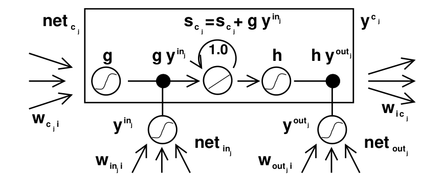

LSTM learned to carry a value across 1,000 time steps, on a network of a few thousand weights
The speech recognition and translation the name now carries came years later, on a three-gate cell Hochreiter and Schmidhuber's paper never described.
Why this matters
For about fifteen years, the standard way to make a neural network read a sequence, a sentence, a recording, was a design called Long Short-Term Memory. Its name still turns up whenever someone explains how machines handled language before the current models. The design comes from a 1997 paper by Sepp Hochreiter and Jürgen Schmidhuber. This lesson reads that paper and tells you what is in it: the problem, the mechanism it introduced, and how large the evidence really was. By the end you will know why an ordinary recurrent network cannot learn to connect events far apart in a sequence, and what a memory cell does about that. You will also see why the LSTM that later ran speech recognition and translation was not quite the one this paper described.
- 01
- One gradient step drops the loss from 7.0 to 0.225: the weight-update rule the training in this lesson depends on.
- 02
- Backpropagation's famous paper showed a network building features no one designed: how a network assigns blame backward through its own steps.
What Hochreiter and Schmidhuber published in 1997
The paper is called “Long Short-Term Memory,” and it ran to forty-six pages in the journal Neural Computation in 1997.1 Its authors were Sepp Hochreiter at the Technical University of Munich and Jürgen Schmidhuber at the IDSIA lab in Lugano. A recurrent neural network reads a sequence one step at a time and carries some state forward. In practice it cannot learn to connect an input to an output that depends on it many steps later.1
Every result in the paper comes from artificial data the authors designed themselves. There is no speech and no text anywhere in it, and the name would later be attached to both.
How the error signal dies on the way back
To train a network like this, you need a way to assign blame. When the output is wrong, backpropagation works backward through the network's steps and computes how much each weight contributed to the error. Gradient descent then nudges each weight a little way down its share. In a recurrent network the same signal has to travel backward not only through layers but through time, from the step where the mistake showed up to the much earlier step where the relevant input arrived.
At each step of that backward journey the error signal is multiplied by a weight and by the slope of an activation function. Multiply a number by roughly the same factor over and over and one of two things happens. If the factor is below one, the product shrinks toward zero. If it is above one, it grows without bound. Sepp Hochreiter had shown exactly this in his 1991 diploma thesis, the document the 1997 paper credits for the analysis.2 He proved it for two quantities: the influence of a distant input on the network's current state, and the dependence of the output on any single weight. Each scales as a product of terms that falls or rises exponentially with the number of steps in between.2
Over a long gap, the error signal that should tell an early weight what to do has either vanished to nothing or blown up into noise by the time it arrives. The network can learn short-range connections and not long-range ones. This is the vanishing gradient problem, and in 1997 it was the reason recurrent networks could not learn to remember.
The memory cell that holds a value untouched
LSTM's answer is a protected place to keep a value. The core is a single unit with a loop back to itself whose weight is fixed at exactly 1.0.1 Because the weight is one, a value written into that unit is still there at the next step, and the step after, for as long as nothing disturbs it. Run the training signal backward through that loop and it too is multiplied by one at every step, so it neither shrinks nor grows. Hochreiter and Schmidhuber named this the constant error carousel: a channel down which the error flows across many steps without decaying.1
A value that can never be changed or hidden would be useless, so the cell is wrapped in two controls. An input gate multiplies the incoming signal before it reaches the cell. Near zero, it lets nothing new in and the stored value is left alone. Open, it lets a new value be written. An output gate multiplies the cell's value on the way out, so when it is near zero the rest of the network cannot see the stored value.1 Both gates are trained, so the network learns when to write and when to read.

The 1997 cell has these two gates and no others. The word “forget” does not appear anywhere in the paper.1
A strong result on a deliberately small benchmark
So the mechanism is compact. The evidence is where the paper and its reputation part company. Every experiment in it runs on synthetic sequences the authors built to order, and the networks are tiny by any later standard.1
The paper reports six experiments with about a dozen task variants, all artificial.1 A network recognizes strings of a small formal grammar, or recalls a symbol buried behind a long run of random distractors. Others add two marked numbers far apart in a sequence, or report the order of a few widely separated symbols. The networks that solved these held between two and four memory cells and ran from under a hundred to a few thousand weights.1 The single largest network, in one distractor experiment, reached about 10,500 weights.1 A language model today is measured in billions of parameters.
| Experiment | What the network had to do | Weights |
|---|---|---|
| Reber grammar | recognize strings from a small formal grammar | 264–276 |
| Distractors | recall one symbol past up to 1 000 random distractors | 364–6 064 |
| Adding | sum two marked numbers in a long sequence | 93 |
| Temporal order | report the order of widely separated symbols | 156 / 308 |
The hardest task carried a value across a gap of more than 1,000 time steps, with 1,000 distractor symbols in between. The network learned it on about 6,000 weights and two memory cells, after some 49,000 training sequences.1 Nothing else at the time could do this. The standard recurrent training methods, the ones that ran backpropagation through time, failed these long-lag tasks outright.1 Within its scope the result was strong and genuinely new.
The small scale was a choice, not a limitation the authors missed. They wrote that they picked artificial tasks on purpose. Many long-lag benchmarks then in use could be solved by a short-lag shortcut, or by guessing weights at random, and they wanted problems that could only be solved by truly remembering.1 They were equally plain about what LSTM could not do. Its efficient training algorithm could not handle a strongly delayed exclusive-or, and the network could not count time steps precisely.1 The paper does not oversell itself. The gap that opened later is between this evidence and the reputation, not between the paper's claims and its own results.
The LSTM that got famous was not the one from 1997
The cell that carried the name into production had a part the 1997 cell lacked. In 2000, Felix Gers, Jürgen Schmidhuber and Fred Cummins added a third gate, the forget gate, in a paper titled “Learning to Forget.” A cell reading a continuous stream that is never reset can let its stored value grow without bound. The forget gate lets it learn to clear its own state once the stored value has served its purpose.3 Hochreiter's own group revisited the architecture in 2024. It lists the standard cell's three gates, input, output and forget, and says plainly that “the forget gate has been introduced by Gers.”3 The explainer that taught LSTM to a generation of practitioners, Christopher Olah's from 2015, opens its walk through the cell with the forget gate.4 So the LSTM most people picture is the three-gate cell from 2000, not the two-gate cell from 1997.
The real-world results arrived on that later cell, and from more than one group.
-
1997
LSTM is published1
Hochreiter and Schmidhuber introduce the constant error carousel and its two gates, tested only on synthetic sequence tasks.
-
2000
The forget gate is added3
Gers, Schmidhuber and Cummins give the cell a third gate, so it can reset itself on a continuous input stream.
-
2005
LSTM reads real speech5
Alex Graves and Jürgen Schmidhuber apply the three-gate cell to the TIMIT speech corpus. It reaches a 69.8% mean framewise phoneme score, beating the recurrent and feedforward alternatives.
-
2013
Deep LSTM sets a speech record6
Alex Graves, Abdel-rahman Mohamed and Geoffrey Hinton, at Toronto, combine deep LSTM with connectionist temporal classification. They reach 17.7% error on TIMIT phoneme recognition, the best score then recorded.
-
2014
LSTM translates7
Ilya Sutskever, Oriol Vinyals and Quoc Le at Google map an English sentence into a single vector and back out as French. It is the encoder-decoder design our seq2seq lesson covers, built on what they call the LSTM formulation from Graves. An ensemble scores 34.8 BLEU on English-French, past a phrase-based baseline at 33.3.
-
That model had four layers of 1,000 cells, 1,000-dimensional word embeddings, and 384 million parameters.7 Set that against the few thousand weights of 1997: a descendant of that cell, at a scale those experiments never approached.
-
2017
Attention displaces recurrence8
Vaswani and colleagues introduce the Transformer, which dispenses with recurrence and overtakes recurrent models, LSTM among them, for translation. Recurrent nets had been the established state of the art until then.
-
2024
Hochreiter's group returns3
An extended LSTM, xLSTM, is scaled to 2.7 billion parameters on 300 billion tokens, a revival of the idea rather than the 1997 cell.
This is where a citation of LSTM can mislead. When a history says LSTM ran speech recognition or machine translation, that is true. It happened on the three-gate cell, trained by methods the 1997 paper did not use, by groups that in one case included neither original author.6 What the 1997 paper itself demonstrated was narrower and earlier: that a gated memory cell could learn to carry a value across a long gap on a synthetic task. The Transformer displaced recurrence for language in 2017, and by then the models people called LSTM were already a generation removed from the one in the paper.8 Its 2024 return, xLSTM, revives the idea, not the original evidence.3
The takeaway
Here is what to keep. The 1997 Long Short-Term Memory paper solved a real and hard problem: it showed that a network could learn to hold a value across a thousand steps, when no earlier recurrent method could manage more than a handful. It did so with one clean idea, a memory cell whose self-loop of weight one lets the error flow back undecayed, opened and closed by two gates the network trains for itself. What the paper did not have was scale, or a forget gate. Its evidence was a dozen synthetic tasks on networks of a few thousand weights. The speech recognition and translation the name now carries came later, on a three-gate cell that other papers built and other groups ran. The reputation is earned, and not all of it was earned in 1997. When you see LSTM invoked, it is worth knowing which LSTM is meant. It is either the compact, careful demonstration in the paper, or the larger machine the field assembled around it over the fifteen years that followed.
- 01
- Christopher Olah, “Understanding LSTM Networks”: the step-by-step walk through the modern three-gate cell.
- 02
- Beck et al., “xLSTM: Extended Long Short-Term Memory”: Hochreiter's group revisiting the design at billions of parameters.
Sources
- Neural Computation · Hochreiter & Schmidhuber, “Long Short-Term Memory” (1997)
- TU München · Hochreiter, “Untersuchungen zu dynamischen neuronalen Netzen,” Diplomarbeit (1991)
- arXiv · Beck et al., “xLSTM: Extended Long Short-Term Memory” (2024)
- Christopher Olah · “Understanding LSTM Networks” (2015)
- Neural Networks · Graves & Schmidhuber, “Framewise Phoneme Classification with Bidirectional LSTM” (2005)
- ICASSP · Graves, Mohamed & Hinton, “Speech Recognition with Deep Recurrent Neural Networks” (2013)
- NIPS · Sutskever, Vinyals & Le, “Sequence to Sequence Learning with Neural Networks” (2014)
- NIPS · Vaswani et al., “Attention Is All You Need” (2017)